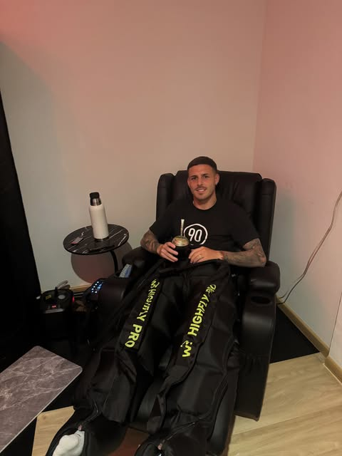
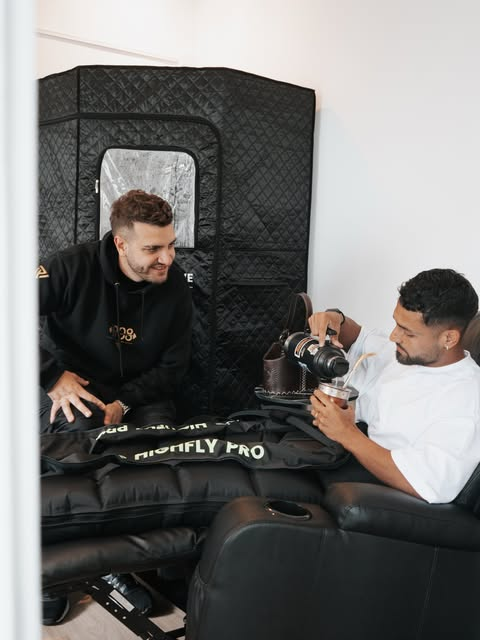
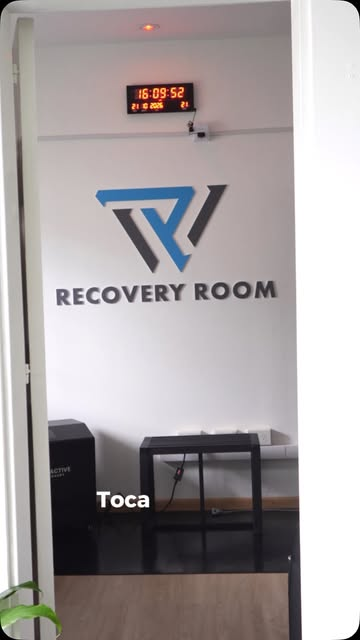
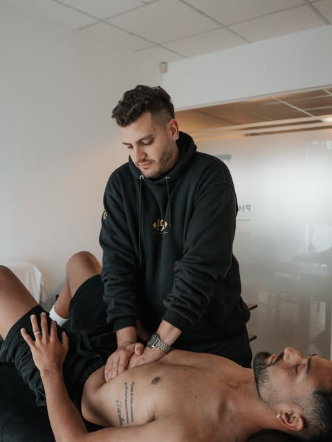
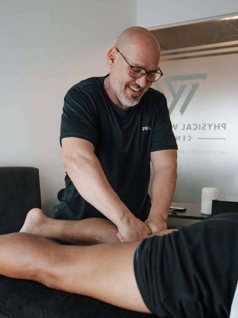
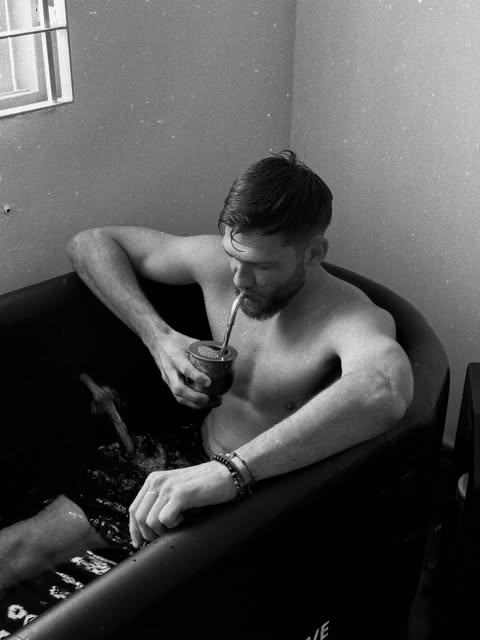

San Isidro · Buenos Aires
Recuperación· Rendimiento· Bienestar
Presoterapia, sauna y crioterapia en un mismo circuito. Además, kinesiología, masajes y nutrición deportiva.
Los botones de contacto se activan cuando arrancamos con la versión oficial.

- 5servicios
- 3 etapasen el circuito
- 15 a 21 hde lunes a viernes
- San IsidroBuenos Aires
Nuestros servicios
¿Qué estás buscando?

Circuito Recovery
Bienestar para el cuerpo y un cable a tierra para la mente. Un espacio privado, con profesionales que te acompañan.
Botas de compresión · Sauna húmedo · Crioterapia

Recovery VIP
El circuito Recovery completo más 15 minutos de masajes.
Pistola masajeadora con frío y calor · Rolo eléctrico · Sillón masajeador · Botas de compresión · Sauna húmedo · Pileta de crioterapia · Masajes

Kinesiología deportiva
Abordaje de lesiones deportivas con evaluación y tratamientos individualizados. El objetivo no es solo aliviar el dolor: es recuperar la función y acompañarte en la vuelta a la actividad.
Evaluar. Tratar. Readaptar. Volver más fuerte.

Masajes
La recuperación también está en las manos de quienes saben cuidarte. Para aliviar tensiones, liberar cargas musculares y ayudarte a sentirte mejor.
Lunes a viernes de 14 a 21 h · Sábados de 8 a 13 h
Nutrición deportiva
Para que lo que comés acompañe tu entrenamiento y tu recuperación.
Consultá disponibilidad al reservar.
El circuito incluye
Tu momento de Recovery
- 01
Botas de compresión 20 min
Tecnología de presión secuencial que estimula la circulación y acelera la recuperación muscular.
- 02
Sauna húmedo 10 a 15 min
Calor y vapor que relajan la musculatura y ayudan a liberar tensiones.
- 03
Crioterapia 6 a 8 min
Inmersión en agua fría que ayuda a disminuir la inflamación y aliviar la fatiga muscular.

Horarios
Cuándo podés venir
Recovery
| Lunes a viernes | 15:00 a 21:00 |
|---|---|
| Sábado | 09:00 a 13:00 |
| Domingo | Cerrado |
Masajes
| Lunes a viernes | 14:00 a 21:00 |
|---|---|
| Sábado | 08:00 a 13:00 |
| Domingo | Cerrado |
Physical Wellbeing Center · San Isidro, Buenos Aires
Turnos
¡Vení a vivir tu experiencia Recovery!
Elegí el servicio y el horario, y te confirmamos el turno.
- Circuito Recovery
- Recovery VIP
- Kinesiología
- Masajes
- Nutrición deportiva
Recovery: lunes a viernes de 15 a 21 h · sábados de 9 a 13 h
Los botones de contacto se activan cuando arrancamos con la versión oficial.